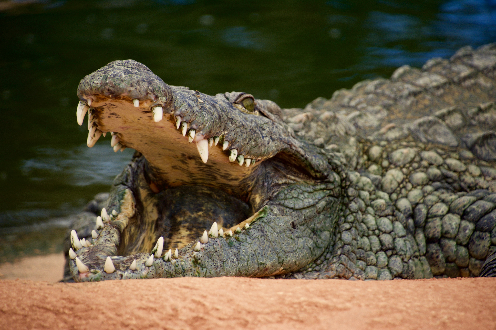

 Alligators have a wide, rounded, u-shaped snout, while crocodiles have long, pointed, v-shaped snouts. Believe it or not, the difference in shape means that alligators can exert more strength from their mouths, which is useful in cracking open hard-shelled vertebrates, like turtles.